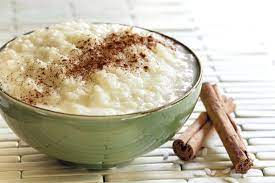

RICE PUDDING
What is a the RICE PUDDING?
This rice pudding is the best I've ever tasted, and it gets rave reviews from everyone who tastes it!
Sprinkle with nutmeg or cinnamon, if desired.
For creamier pudding, use short or medium-grain rice.
Rice Pudding Rice pudding is a creamy mixture of rice and milk that is cooked until it's thick and soft.
It can be sweet or savory. This raisin-studded dessert rice pudding is thickened with an egg,
sweetened with sugar, and enhanced with vanilla.
INGREDIENTS
These are the ingredients you'll need to make this classic rice pudding recipe:
- Rice: This creamy rice pudding recipe starts with white rice cooked until tender.
- Milk: You'll need two cups of milk, divided.
- Sugar: The rice pudding is sweetened with white sugar.
- Salt: A pinch of salt enhances the flavor of the other ingredients, but it won't make the pudding taste salty.
- Egg: An egg adds moisture and helps bind the pudding together.
- Raisins: Raisins lend bursts of fruity flavor
- Butter: Butter adds even more moisture and richness.
- Vanilla: A dash of vanilla enhances the overall flavor of the rice pudding.
Recipe instructions
Here's a very brief overview of what you can expect when you make homemade rice pudding:
- Cook the rice.
- Cook the cooked rice, some of the milk, sugar, and salt over medium heat until thick.
- Stir in the remaining milk, egg, and raisins. Cook for two more minutes.
- Remove from heat and stir in the butter and vanilla.
Return to top
Return to main page